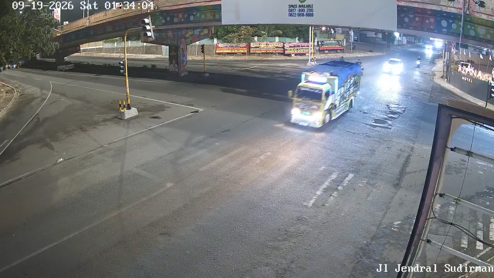

Titik Pantau CCTV Lalu Lintas
Pilih titik kamera aktif untuk memuat inferensi model AI, telemetri kecepatan, dan deteksi insiden secara spesifik.
CCTV Perempatan Jendral Sudirman

Log Anomali & Insiden
50 TerakhirAkumulasi Kendaraan
Rata-rata Simpang
85% Arus Kendaraan
Kapasitas Simpang
ETLE Golongan VI
Anomali Terdeteksi
Analitik Rekayasa Transportasi & Klasifikasi Kendaraan
Visualisasi data empiris berdasarkan agregasi ribuan deteksi di 3 koridor utama Kota Bandar Lampung.
Komposisi Golongan Kendaraan (Standar Indonesia)
Distribusi proporsi Golongan I, II, III, IV, V, VI-A, dan VI-B
Distribusi Kecepatan & Persentil ke-85 (V85)
Evaluasi batas kecepatan desain jalan (Speed Zoning 50/60 km/h)
Profil Fluktuasi Volume Kendaraan Per Jam (24 Jam)
Puncak pagi (07:00-09:00) dan puncak sore (16:00-18:00)
Komparasi Kinerja Lalu Lintas Tri-Lokasi
Perbandingan volume, kepatuhan helm, dan insiden antar titik kamera
Arsitektur Sistem & Metodologi Penelitian SDLC
Standarisasi rekayasa perangkat lunak berbasis SDLC IEEE/ISO 12207 dan IEEE 829 untuk publikasi jurnal ilmiah internasional.
1. Vision & Tracking Pipeline
Inference engine memanfaatkan model YOLOv8n dengan resolusi 1280x720 dikombinasikan dengan algoritma pelacakan ByteTrack & BOTSORT (via pustaka C LAP solver lapx) untuk persistensi ID kendaraan melintasi oklusi.
2. Homografi Proyektif 4-Titik
Transformasi bidang citra 2D perspektif ke koordinat permukaan jalan riil (meter) menggunakan matriks homografi $3 \times 3$ berbobot determinan terbalik:
s = (Δd / Δt) × 3.6 [km/h]
3. Mesin Deteksi 5 Anomali Cerdas
Deteksi berbasis aturan fisika waktu-nyata: kendaraan berhenti (Δt > 3s, speed < 2km/h), lawan arah median, sepeda motor roboh (inversi rasio aspek > 1.3), tabrakan (IoU > 0.35 & deselerasi tajam), serta ETLE helm.
Berkas Dokumentasi Lengkap SDLC (01 - 05)
Tersedia dokumen SRS, SDD, Formulasi Matematis, dan STD (Testing 16/16 Passed) di repositori resmi.
Menjalankan Aplikasi via Docker Container
Aplikasi siap dijalankan di server atau PC lokal dengan container terverifikasi CI/CD.
docker run -d -p 8501:8501 --name cctv-app ghcr.io/abunabiha/cctv-traffic-analytics:latest